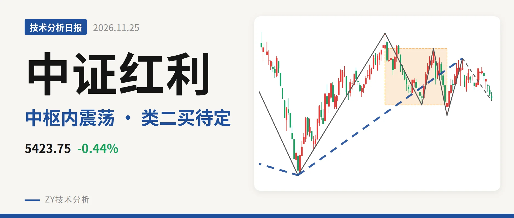
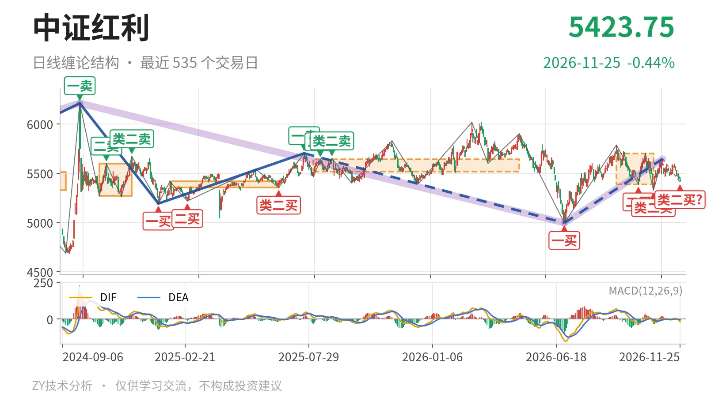

中证红利｜类二买暂定5409点，上涨笔动能逐笔衰减

最近日线中枢 5386.04—5701.06点，收盘位于中枢之内
一句话：暂定的类二买5409点，中枢下沿5386点附近成关键支撑。
📊 走势结构：上涨线段还在延续，高点逐笔走低
6月30日以来的日线上涨线段（4995.49→5646.01）没有结束，但结构在走弱。线段内部三笔上涨的高点依次为5786.14、5701.06、5646.01，一个比一个低。这段上涨线段生于更大级别的下跌段（2024年10月8日至2026年6月30日，6209.67→4995.49），后者也尚未走完。上涨线段至今未能突破5702.03点（前下跌线段起点），大级别下跌段的结构没有被破坏。当前性质是：大级别下跌段中的反弹，反弹本身在衰减。

📉 中枢与位置：中枢扩展，最新价贴近下沿
9月1日至10月23日的日线笔中枢区间为5386.04—5701.06点，中轴5543.55。最新收盘5423.75点位于中枢之内，距下沿5386.04点仅约38点，距上沿约277点。前一个日线笔中枢（2025年8月4日至2026年4月30日）区间为5518.46—5639.99点，当前中枢下沿低于前中枢下沿、上沿高于前中枢上沿，构成中枢扩展。价格在中枢内偏弱位置，贴近下沿运行。
🔍 买卖点：暂定的类二买5409点，随下跌笔变化
6月30日一买4995.49点之后，9月29日二买5386.04点、10月23日类二买5328.30点依次出现。11月25日标记的类二买5409.40点位于11月4日以来的下跌笔中，这笔还在延续，因此该类二买为暂定的类二买。若下跌笔继续延伸，类二买价格会随之下移。暂定的类二买5409.40点高于10月23日类二买5328.30点约81点，但优势不大；若跌破5328点，类二买序列将被打破。

⚡ 背驰：上涨红柱面积从1451骤降至65
6月30日至9月1日的上涨笔红柱面积1451、DIF高点68.7，高点5786.14；10月23日至11月4日的上涨笔红柱面积65、DIF高点5.7，高点5646.01。同向上涨笔比较，后者高点未创新高，红柱面积从1451骤降至65，DIF高点从68.7跌至5.7——不是新高不新强，而是连新高都没创，动能同步衰减。下跌笔绿柱面积同样在收敛，多空都在缩力。
🔑 关键位置：5386点附近守住则中枢震荡延续
当前下跌笔还在延续，5386点附近（中枢下沿）是第一道结构支撑。若下跌笔在此上方止跌，中枢震荡格局不变。若跌破5386点后反抽回不到5386点上方，结构上构成三卖。5328点附近（10月23日类二买）是第二道支撑，跌破则上涨线段内部低点不再抬升，线段结构受损。上方5701点附近（中枢上沿）是压力，重新站上则下跌更可能只是中枢扩展。综合判断：价格贴近中枢下沿，上涨高点逐笔走低、动能逐笔衰减，但下跌动能同样在收敛——弱在上涨无力创新高，强在下跌无力创新低，结构中性。
⚠️ 本文为基于公开行情数据的缠论技术结构记录，由程序自动计算并生成，仅供学习交流，不构成任何投资建议。市场有风险，投资需谨慎。